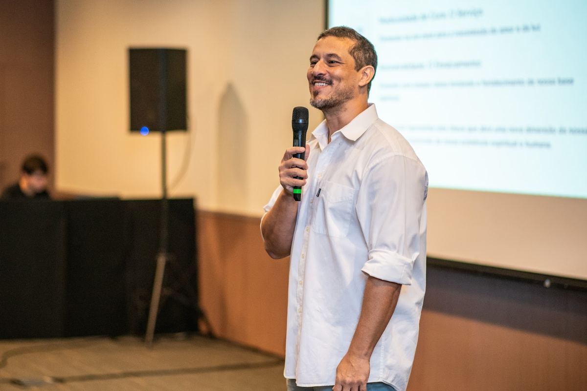
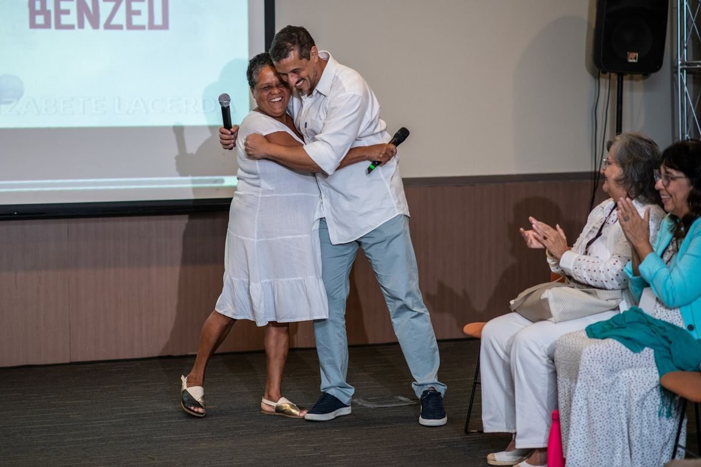
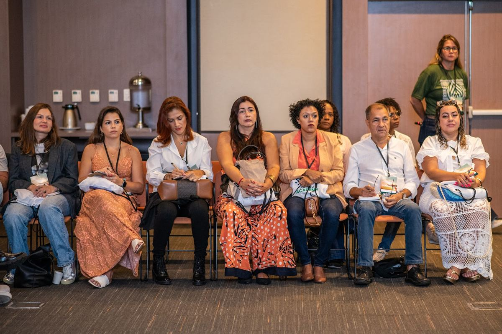
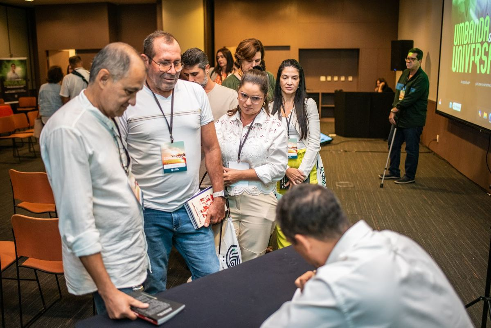

Em 2 dias, com fundamento teológico e sem misticismo vazio, você entende o que sente.
Sexta, 04/12, das 18h30 às 21h30
Sábado, 05/12, das 9h às 15h
Ao vivo pelo Zoom, com o Ricardo Di Napoli. Horário de Brasília.
Você não precisa mudar de crença.
Isso não é coincidência. Também não é loucura. Não é falta de dom. É falta de fundamento.

40 anos de vivência na Umbanda. Mais de 20 anos ensinando. Mais de 1.000 alunos formados em Teologia da Umbanda.
"Fora do conhecimento não há libertação."
Sacerdote, filósofo e teólogo, fundador do Movimento Umbanda Natural. Ele se define como universalista: ensina a Umbanda com fundamento e não converte ninguém.
Sexta, 04/12, das 18h30 às 21h30.
A lógica por trás da sensibilidade, da intuição e da chamada mediunidade, com vivências guiadas ao vivo.
Sábado, 05/12, das 9h às 15h.
As entidades espirituais da Umbanda e o que cada uma representa, de forma teológica, sem promessa de "revelação instantânea".
Você leva:
Nesses 2 dias você sai com mais clareza sobre o que é sensibilidade, o que é intuição e como caminhar com fundamento.
Você não precisa ser médium.
Mais de 1.000 alunos formados em Teologia da Umbanda, em 40 anos de caminhada do Ricardo.



Estes depoimentos são de alunos da Formação em Teologia e Doutrina da Umbanda, do Ricardo. Não são da Imersão. Cada um conta a experiência de uma pessoa.
Fotos reais do Congresso Arandu.
O ingresso a R$ 29,90 vale até segunda, 16/11, às 23h59. Depois, o valor muda.
Faltam: --
Na hora de garantir o ingresso, você pode levar também a gravação dos 2 dias por R$ 147,00. Ela é liberada em até 7 dias depois da imersão.
Dois dias, ao vivo, com fundamento. Sem atalho e sem misticismo vazio.